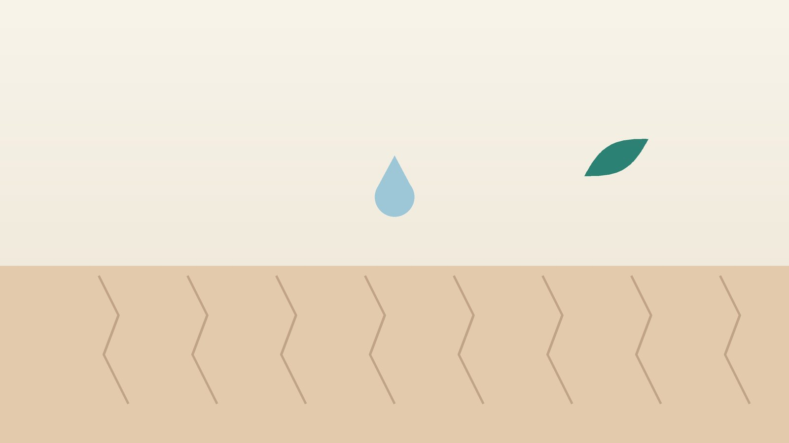

건강 칼럼 · 인천 구강건조증 한의원
입이 바짝 마르고 말하기 불편하다면, 구강건조증 한방 관리

나의 입마름, 이런 모습인가요?
- 입안이 끈적하고 혀가 입천장에 달라붙는 느낌이 있다
- 빵이나 밥을 물 없이 삼키기 어렵다
- 밤에 입이 말라 물을 마시려고 깬다
- 말을 오래 하면 입이 바짝 마르고 발음이 꼬인다
- 최근 충치가 부쩍 늘거나 틀니가 겉돈다
- 눈도 뻑뻑하고 모래가 들어간 듯 불편하다
이 체크리스트는 진단 도구가 아니라 상담이 필요한지 가늠해 보는 참고용입니다.
입은 왜 마르나요?
침은 귀밑샘, 턱밑샘, 혀밑샘 같은 큰 침샘과 입안 곳곳의 작은 침샘에서 나와 음식을 적셔 삼키게 하고, 산을 중화해 치아를 보호하며, 세균과 곰팡이를 씻어 냅니다. 침샘은 자율신경의 지시로 움직이므로 이 신호를 막는 약을 먹으면 침이 줄어듭니다. 나이가 들수록 입마름이 흔해지는 것도 노화 자체보다 먹는 약의 가짓수가 늘어나는 영향이 크다고 봅니다.
- 약물: 콧물·알레르기약(항히스타민제), 삼환계 항우울제를 비롯한 일부 항우울제, 이뇨제와 일부 혈압약, 과민성 방광약, 파킨슨병 약, 수면제·진정제가 대표적입니다.
- 쇼그렌증후군: 면역 세포가 침샘과 눈물샘을 공격하는 자가면역 질환으로, 입마름과 눈 건조가 함께 오고 중년 여성에게 많습니다.
- 당뇨: 혈당이 높으면 소변으로 물이 빠져나가 입이 마르고 물을 자주 찾게 됩니다.
- 그 밖의 원인: 머리·목 방사선 치료, 코막힘으로 입을 벌리고 자는 습관, 물을 적게 마시는 습관, 흡연과 음주가 있습니다.
입이 마르면 왜 충치가 늘까요?
침은 식사 뒤 입안의 산을 씻어 내고 칼슘과 인으로 치아 표면을 다시 단단하게 만드는 일을 합니다. 침이 줄면 이 보호막이 사라져 잇몸 경계와 치아 뿌리 쪽에 충치가 빠르게 생기고, 혀가 붉고 갈라지거나 입꼬리가 헐고 하얀 막이 끼는 칸디다 감염도 잘 생깁니다.
그래서 입마름이 있다면 불소 치약을 쓰고, 단 사탕이나 음료로 입을 적시는 습관은 피하며, 3~6개월마다 치과 검진을 받는 것이 좋습니다. 치과에서 불소 도포나 인공 타액을 함께 권하기도 합니다.
입마름 뒤에 다른 병이 숨어 있을 수 있는 신호
- 입마름과 함께 갈증, 소변이 잦음, 체중 감소가 있다 (당뇨 확인)
- 입과 눈이 함께 마르고 관절 통증이나 피부 발진이 있다 (쇼그렌증후군 확인)
- 귀밑이나 턱밑이 붓고 아프며 열이 나거나 고름 맛이 난다 (침샘염 확인)
- 귀밑이나 턱밑에 단단한 혹이 만져지고 점점 커진다
- 입안이 마르면서 지속되는 궤양이나 하얗고 붉은 반점이 있다
이런 경우 내과, 류마티스내과, 이비인후과, 치과 진료로 원인 질환을 먼저 확인해야 합니다. 원인이 되는 약을 드시고 있더라도 혼자 끊지 말고, 처방한 의사와 바꿀 수 있는지 상의하세요.
한의학은 입마름을 어떻게 보나요?
한의학에서는 입이 마르는 것을 구건(口乾)·구조(口燥)라 부르고, 몸을 적시는 맑은 체액인 진액(津液)이 부족하거나 제대로 올라오지 못한 상태로 해석했습니다. 갈증과 소변이 늘고 마르는 병을 소갈(消渴)이라 하여 따로 다룬 것도 오늘날 당뇨와 입마름의 관계를 떠올리게 합니다.
진액이 줄어든 바탕에는 나이와 과로로 몸의 촉촉함이 마르는 음허(陰虛), 기운이 약해 진액을 입까지 끌어올리지 못하는 기허(氣虛), 스트레스와 열로 진액이 졸아드는 상태가 있다고 보았습니다. 『금궤요략』의 맥문동탕(麥門冬湯)처럼 진액을 보태는 처방이 오래 쓰여 온 것도 이런 관점에서입니다.
나의 입마름은 어떤 유형일까?
1. 음허진상(陰虛津傷) 말라서 타는 유형
- 이런 분에게 많아요
- 50대 이후, 갱년기 이후, 오래 앓은 분
- 나타나는 모습
- 오후와 밤에 입이 더 마르고 혀가 갈라진다
- 함께 오는 몸의 신호
- 손발바닥 열감, 식은땀, 변비
- 진찰에서 보이는 모습
- 혀가 붉고 갈라지며 설태가 거의 없고 맥이 가늘게 빠름
- 치료 방향
- 진액을 보태고 뜬 열을 내리는 방향 (맥문동탕·육미지황탕 계열)
- 오늘부터 해 볼 것
- 매운 음식과 술을 줄이고 물을 조금씩 자주 드세요.
2. 기음양허(氣陰兩虛) 지쳐서 마르는 유형
- 이런 분에게 많아요
- 말을 많이 하는 직업, 과로가 잦은 분
- 나타나는 모습
- 말을 오래 하면 입이 마르고 목소리가 갈라진다
- 함께 오는 몸의 신호
- 숨참, 쉽게 지침, 땀이 많음
- 진찰에서 보이는 모습
- 혀가 옅고 마르며 맥이 약함
- 치료 방향
- 기운과 진액을 함께 보태는 방향 (생맥산 계열)
- 오늘부터 해 볼 것
- 말하는 중간중간 물을 한 모금씩 머금으세요.
3. 간울화열(肝鬱化熱) 긴장으로 마르는 유형
- 이런 분에게 많아요
- 스트레스와 불안이 많은 분
- 나타나는 모습
- 긴장하면 입이 확 마르고 쓴맛이 돈다
- 함께 오는 몸의 신호
- 가슴 답답함, 잠 설침, 한숨
- 진찰에서 보이는 모습
- 혀 가장자리가 붉고 맥이 팽팽함
- 치료 방향
- 뭉친 기분을 풀어 진액이 졸지 않게 하는 방향 (가미소요산 계열)
- 오늘부터 해 볼 것
- 긴장될 때 코로 천천히 숨 쉬며 입을 다물어 보세요.
한의원에서는 어떻게 진찰하나요?
- 약 목록: 드시는 모든 약과 영양제를 확인해 입마름을 부를 수 있는 약을 살핍니다.
- 동반 증상: 눈 건조, 관절 통증, 갈증과 소변, 코막힘과 입 벌리고 자는 습관을 여쭙습니다.
- 입안 살피기: 혀의 갈라짐과 색, 침이 고이는 정도, 입꼬리 염증을 봅니다.
- 설진·맥진: 음허, 기허, 열 가운데 무엇이 중심인지 판단해 처방 방향을 정합니다.
침·약침·한약 치료는 어떻게 하나요?
1. 침 치료
- 염천(廉泉): 목 앞 가운데, 턱 아래와 목젖 위 사이의 오목한 곳(설골 위). 혀 아래 침샘 쪽 순환을 돕습니다.
- 승장(承漿): 아랫입술 아래 턱 가운데 오목한 곳.
- 협거(頰車): 어금니를 꽉 물 때 볼에서 근육이 불룩 솟는 곳. 귀밑샘 주변입니다.
- 조해(照海): 안쪽 복사뼈 꼭짓점에서 곧장 내려간 곳의 우묵한 자리. 진액을 보태는 데 씁니다.
- 합곡(合谷): 손등에서 엄지와 검지 뼈가 만나는 곳의 둘째 손가락 쪽. 얼굴과 입의 기운을 돕습니다.
머리·목 방사선 치료 뒤 입마름에 침 치료를 시험한 연구들이 있지만 규모와 결과가 엇갈려, 침 치료는 보조 관리로 봅니다.
2. 약침과 온열 요법
입마름과 함께 턱과 목 주변 근육이 굳은 분에게 해당 부위 약침을 적용하고, 몸이 차고 기운이 약한 분은 온열 요법을 함께 시행합니다.
3. 한약
유형에 맞춘 탕약으로 진액을 보태고 열을 식힙니다. 입을 마르게 하는 약재는 피해서 처방하며, 드시는 약이 있으면 알려 주시면 확인해 처방합니다. 당뇨·혈압·갑상선 약은 입이 마르더라도 임의로 끊지 마세요. 한약은 원장이 원내 탕전실에서 약재 선별부터 달이는 과정까지 직접 관리하며, 10일분씩 처방해 복용 경과를 보고 약재 구성과 양을 조절합니다.
원장님이 네이버 블로그에 진료 이야기와 건강 정보를 꾸준히 올리고 있습니다. 더 많은 이야기는 블로그에서 확인해 보세요.
블로그 보기관리는 어떤 순서로 진행되나요?
- 원인 확인 약 목록과 혈당, 쇼그렌증후군 등 원인 질환 검사 결과를 먼저 확인합니다.
- 1~4주 주 1~2회 침 치료와 탕약, 집에서 하는 침샘 자극으로 입안의 불편을 다룹니다.
- 5~8주 밤에 깨는 횟수, 물 마시는 양, 삼키기 불편을 비교하며 처방을 조정합니다.
- 유지기 치과 검진과 생활 습관을 이어 가며 계절과 컨디션에 따라 점검합니다.
입마름은 원인 약이나 질환이 계속되는 경우가 많아, 불편을 줄이며 치아와 입안을 지키는 것을 목표로 진찰 후 개인별로 안내합니다.
입안을 촉촉하게 하는 생활 관리
- 침샘 마사지: 양손 손가락으로 귀 앞 볼을 뒤에서 앞으로 둥글게 10번, 턱 아래 안쪽을 엄지로 지그시 10번, 턱 끝 아래를 위로 10번 누르면 침이 나오는 데 도움이 됩니다. 식사 전에 하면 좋습니다.
- 씹기: 무설탕 껌이나 자일리톨 껌, 오이·당근처럼 씹는 맛이 있는 음식은 침 분비를 자극합니다.
- 물과 습도: 물은 한 번에 많이보다 조금씩 자주 마시고, 잠자는 방은 가습기로 습도를 맞춥니다.
- 피할 것: 알코올이 든 구강청결제, 커피와 술, 담배, 짜고 매운 음식은 입을 더 마르게 합니다.
- 코로 숨쉬기: 코막힘으로 입을 벌리고 잔다면 코 치료를 함께 받는 것이 좋습니다.
다른 진료가 함께 필요한 경우
- 갈증과 소변이 늘었다면 혈당 검사를 받으세요.
- 입과 눈이 함께 마르면 류마티스내과에서 쇼그렌증후군 검사를 받으세요.
- 충치가 갑자기 늘었다면 치과에서 불소 관리와 검진을 받으세요.
- 입마름이 약 때문으로 보이면 처방한 의사와 약 조정을 상의하세요.
자주 묻는 질문 Q&A
- Q1. 물을 많이 마시면 해결되나요?
- 잠시 적셔 줄 뿐 침의 보호 기능을 대신하지는 못합니다. 조금씩 자주 마시면서 원인을 함께 살펴야 합니다.
- Q2. 먹는 약 때문에 입이 마른 것 같아요.
- 혼자 끊지 말고 처방한 의사와 바꿀 수 있는지 상의하세요. 한의원에서도 약 목록을 함께 확인합니다.
- Q3. 사탕을 물고 있으면 괜찮지 않나요?
- 단 사탕은 충치를 크게 늘립니다. 무설탕 껌이나 자일리톨 제품을 쓰세요.
- Q4. 입이 타는 듯 따가운 것도 같은 병인가요?
- 입안이 화끈거리고 따가운 증상은 구강작열감증후군일 수 있어 진찰에서 따로 구분합니다.
- Q5. 나이가 들면 다 입이 마른가요?
- 나이와 함께 흔해지지만 약과 질환 영향이 큰 경우가 많아 원인을 확인하는 것이 좋습니다.
- Q6. 혈당약과 한약을 같이 먹어도 입이 더 마르지 않나요?
- 처방 전에 드시는 약을 알려 주시면 입을 마르게 하는 약재를 피해 확인 후 처방합니다. 혈당약은 임의로 끊지 마세요.
- Q7. 집에서 지압할 곳이 있나요?
- 안쪽 복사뼈 아래 조해 자리를 엄지로 30초씩 눌러 주고, 침샘 마사지를 함께 해 보세요.
- Q8. 치료는 얼마나 걸리나요?
- 원인에 따라 다르며, 보통 4~8주 동안 밤에 깨는 횟수와 불편을 비교하며 경과를 봅니다.
문원열 대표원장한의사 · 365스마일한의원
임상 경력 15년, 인천 서구 가정동에서 개원 후 10년째 진료하고 있으며, FCST 턱관절학회·연부조직학회·침도학회 등에서 활동합니다. 아픈 곳만이 아니라 증상의 원인을 찾아 진료합니다.
진료 안내
- 진료시간
- 평일 09:00~20:00 (점심시간 13:00~14:00, 접수 마감 19:30)
토·일·공휴일 09:00~15:00 (접수 마감 14:30) - 주소
- 인천광역시 서구 가경주로 46, 2층 (가정동)
인천2호선 가정중앙시장역 인근
영상으로 길 안내 보기 → - 주차
- 한의원 건물 바로 앞 1층 도원주차장
- 예약
- 예약 바로가기 또는 전화 예약
진료시간은 사정에 따라 바뀔 수 있으니 방문 전 전화로 확인해 주세요.
함께 읽으면 좋은 칼럼
건강 칼럼 전체 보기 →


참고 자료
- Shiboski CH, et al. 2016 American College of Rheumatology/European League Against Rheumatism Classification Criteria for Primary Sjögren's Syndrome. Arthritis & Rheumatology, 2017
- 『금궤요략(金匱要略)』 폐위해수상기병맥증병치 — 맥문동탕(麥門冬湯)
- 질병관리청 국가건강정보포털 — 원문
※ 이 글은 일반적인 건강 정보이며, 개인의 상태에 따라 치료 방법과 결과는 다를 수 있습니다. 정확한 진단과 치료는 진료를 통해 결정됩니다. 침·약침 시술 후 드물게 멍, 통증 등이 생길 수 있습니다.